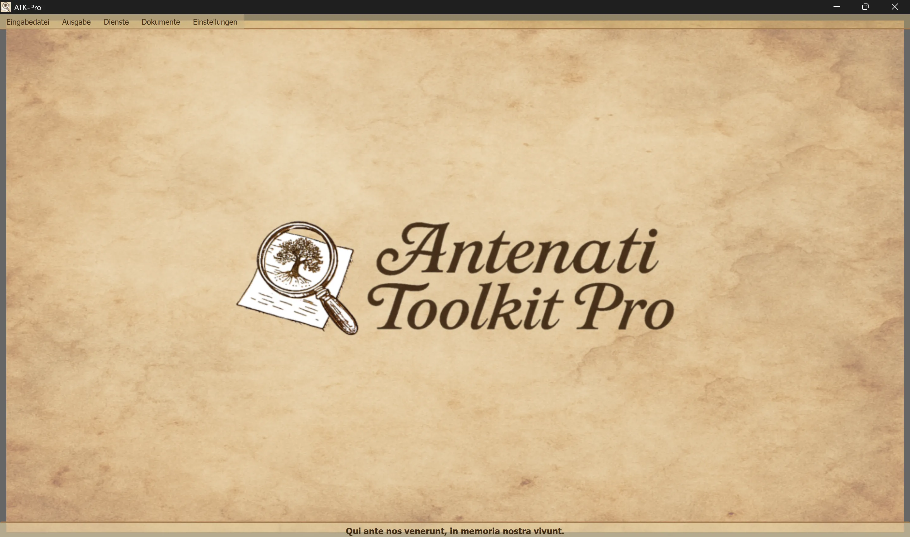

────────────────────────────────────────────────────────────────────────────────
🪟 Windows
ATK-Pro-Setup-vx.x.x.exe von der offiziellen Release-Seite herunter🐧 Linux
ATK-Pro-vx.x.x.deb (Debian/Ubuntu) oder .tar.gz von der Release-Seite heruntersudo dpkg -i ATK-Pro-vx.x.x.deb oder doppelklicken Sie in Nautilus/Files./ATK-Pro aus dem entpackten Ordner🍎 macOS
ATK-Pro-vx.x.x.dmg von der Release-Seite herunter🪟 Windows
C:\Program Files\ATK-Pro\C:\Users\[TuoNome]\Documents\ATK-Pro\output\C:\Users\[TuoNome]\Documents\ATK-Pro\input\🐧 Linux
/opt/ATK-Pro/ (.deb) oder entpackter Ordner (.tar.gz)~/Documents/ATK-Pro/output/~/Documents/ATK-Pro/input/🍎 macOS
/Applications/ATK-Pro.app~/Documents/ATK-Pro/output/~/Documents/ATK-Pro/input/────────────────────────────────────────────────────────────────────────────────
Folgende Sprachen sind verfügbar:
Mit diesen Sprachen können nach Schätzungen auf Grundlage der bis Ende 2025 verfügbaren Daten etwa 98 % der Menschen italienischer Abstammung sowie der weltweit verteilten italienischen oder italienischsprachigen Gemeinschaften abgedeckt werden.
Beim ersten Start erstellt das Programm automatisch die folgenden Ordner:
C:\Users\[TuoNome]\Documents\ATK-Pro\output\C:\Users\[TuoNome]\Documents\ATK-Pro\output\doc\ (Standard-Dokumentordner)C:\Users\[TuoNome]\Documents\ATK-Pro\output\reg\ (Standard-Protokollordner)~/Documents/ATK-Pro/output/input\ entsprechender Ordner (optional, für Eingabedateien)Während der Verarbeitung werden temporäre Ordner für die heruntergeladenen Tiles erstellt (tiles_canvas_X/) und, wenn ein PDF angefordert wurde, temporäre Dateien für dessen Erstellung.
Alle temporären Ordner und Dateien werden nach Abschluss der Verarbeitung automatisch gelöscht.
Es verbleiben nur die endgültig verarbeiteten Dateien (Bilder in den ausgewählten Formaten, PDF, Manifest und Metadaten).
Um die Ausgabeordner zu ändern, verwenden Sie Menü → Einstellungen → „Ausgabeordner auswählen“. Die Auswahl wird gespeichert und bei der nächsten Sitzung automatisch wiederhergestellt.
Der Befehl Einstellungen → Ressourcenprofil steuert die Parallelverarbeitung beim Download, bei der Bildrekonstruktion und bei der PDF-Erstellung:
Das Profil verändert weder Qualität noch Rechte noch die Anzahl der erfassten Dokumente. Portalspezifische vorsorgliche Beschränkungen haben weiterhin Vorrang.
────────────────────────────────────────────────────────────────────────────────
Das Hauptfenster von Antenati Toolkit Pro ist einfach und intuitiv aufgebaut.

Am unteren Rand steht das lateinische Motto „Qui ante nos venerunt, in memoria nostra vivunt“, das an die Bedeutung der Wurzeln und des kollektiven Gedächtnisses erinnert.
Im oberen Bereich des Fensters unterhalb der Titelleiste:
[Eingabedatei] [Ausgabe] [Dienste] [Dokumente] [Einstellungen]
Jedes Menü enthält spezifische Schaltflächen und Optionen (siehe nächsten Abschnitt).
Verwaltet das Laden der IIIF-Datensätze:
├─ Eingabebeispiel
│ └─ Zeigt die Beispieldatei an (Format der Paare: Modus D/R + URL)
├─ Eingabe öffnen
│ └─ Wählt eine .txt-Datei mit Ihren IIIF-Datensätzen aus
│ (Sie muss Paare enthalten: Modus D/R in Zeile 1, URL in Zeile 2)
└─ Eingabe bearbeiten
└─ Bearbeitet die aktuell geladene Eingabedatei
(Datensätze hinzufügen/entfernen, URL ändern, Änderungen speichern)
Verwaltet Verarbeitung und Ausgabe:
├─ Verarbeiten │ └─ Startet Download, Rekonstruktion und Speicherung der Bilder │ (Zeigt ein Fortschrittsfenster in Echtzeit an) ├─ Ausgabeordner öffnen │ └─ Öffnet den Ordner mit den verarbeiteten Dateien im Datei-Explorer └─ Frühere Verarbeitungen anzeigen └─ Liste der bereits verarbeiteten Datensätze
Liste der integrierten Dienste:
├─ KI-gestützte Suche │ └─ Schlägt zu überprüfende Portale, Rechercheansätze und genealogische Suchanfragen vor ├─ Bildanzeige │ └─ Viewer für heruntergeladene Bilder und/oder erzeugte PDFs ├─ JSON-Metadatenanzeige │ └─ Original-JSONs und Metadaten (genealogisch, technisch, EXIF) ├─ Erweiterte OCR │ └─ Handschriftliche Texte des 19. Jahrhunderts, Kirchenlatein, spätmittelalterliche Texte ├─ OCR-Übersetzung │ └─ Automatische Übersetzung extrahierter Texte in die ausgewählten Sprachen └─ GEDCOM-Export └─ GEDCOM, Gramps, Family Tree Maker, Ancestry, MyHeritage, WikiTree, etc.
Zugriff auf Ressourcen und Dokumentation:
├─ Haftungsausschluss - Rechtliche Klauseln und Nutzungsbedingungen ├─ Vorstellung des Autors - Hintergrund des Projektentwicklers ├─ Projektvorstellung - Geschichte, Beweggründe und Roadmap von ATK-Pro ├─ Anleitung - Hauptinhaltsverzeichnis der modularen Anleitung └─ Informationen - Version, Copyright, Kontakt-E-Mail
Allgemeine Programmkonfiguration:
├─ Sprache ändern
│ └─ Wählt die Sprache der Benutzeroberfläche aus (Neustart erforderlich)
├─ Bildformate auswählen
│ └─ Wählen Sie zwischen PNG, JPG, TIFF und PDF (mindestens 1 erforderlich)
│ PDF kann allein oder zusammen mit den Bildformaten ausgewählt werden
│ Die Auswahl wird gespeichert und bei der nächsten Sitzung automatisch vorausgewählt
├─ Ausgabeordner auswählen
│ └─ Öffnet zunächst die Auswahl des Ordnermodus und anschließend die Auswahlfenster:
│ • Ein Ordner für alle → ein einziger Ordner für Dokumente und Register
│ • Separate Ordner Dok./Reg. → ein Ordner für alle Dok., einer für alle Reg.
│ • Ordner für jeden Datensatz → ein eigener Ordner für jeden Datensatz
│ Modus und Ordner werden gespeichert und bei der nächsten Sitzung wiederhergestellt
├─ Konfiguration exportieren
│ └─ Speichert die aktuellen Einstellungen in einer Datei
├─ Konfiguration importieren
│ └─ Lädt eine zuvor gespeicherte Einstellungsdatei (stellt alle Einstellungen und Pfade wieder her)
├─ Nach Updates suchen
│ └─ Prüft, ob neue Programmversionen verfügbar sind
└─ Schließen
└─ Beendet das Programm (zeigt das Unterstützungsbanner PayPal.me an)
────────────────────────────────────────────────────────────────────────────────
ATK-Pro ist in 20 Sprachen verfügbar:
Die Sprache kann jederzeit über Menü → Einstellungen → Sprache ändern geändert werden.
Das Programm muss neu gestartet werden, damit die neue Sprache übernommen wird.
Nach dem Neustart lädt das Programm automatisch die neu ausgewählte Sprache.
Beim Wechsel der Sprache werden folgende Elemente übersetzt:
Wird ein Standardmodell eingestellt oder ist es nicht mehr verfügbar, fragt ATK-Pro den für die Zugangsdaten sichtbaren Katalog ab, wählt ein allgemeines Modell, das zur Funktion und bei Bedarf zu Bildern passt, und versucht bis zu drei Alternativen. Bei Kontingent-, Netzwerk- oder Authentifizierungsfehlern wird kein Fallback ausgeführt.
Modellüberschreibung: Ein manuell eingegebenes Modell bleibt verbindlich und wird niemals automatisch ersetzt.